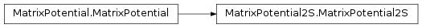
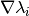
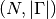
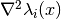
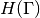
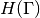
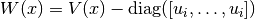
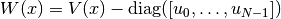
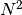
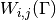

MatrixPotential2S¶
About the MatrixPotential2S class¶
The WaveBlocks Project
@author: R. Bourquin @copyright: Copyright (C) 2010, 2011, 2012, 2013, 2014, 2015 R. Bourquin @license: Modified BSD License
Inheritance diagram¶

Class documentation¶
- class WaveBlocksND.MatrixPotential2S(expression, variables, **kwargs)¶
This class represents a matrix potential
 . The potential is
given as an analytic
. The potential is
given as an analytic  matrix expression. Some symbolic
calculations with the potential are supported.
matrix expression. Some symbolic
calculations with the potential are supported.- calculate_eigenvalues()¶
Calculate the two eigenvalues
 of the potential .
We can do this by symbolic calculations. The multiplicities are taken into account.
Note: This function is idempotent and the eigenvalues are memoized for later reuse.
of the potential .
We can do this by symbolic calculations. The multiplicities are taken into account.
Note: This function is idempotent and the eigenvalues are memoized for later reuse.
- calculate_eigenvectors()¶
Calculate the two eigenvectors
 of the potential .
We can do this by symbolic calculations.
Note: This function is idempotent and the eigenvectors are memoized for later reuse.
of the potential .
We can do this by symbolic calculations.
Note: This function is idempotent and the eigenvectors are memoized for later reuse.
- calculate_exponential(factor=1)¶
Calculate the matrix exponential
 . In the case
of this class the matrix is of size thus the exponential
can be calculated analytically for a general matrix.
Note: This function is idempotent.
. In the case
of this class the matrix is of size thus the exponential
can be calculated analytically for a general matrix.
Note: This function is idempotent.Parameters: factor – The prefactor  in the exponential.
in the exponential.
- calculate_hessian()¶
Calculate the Hessian matrix
 of the potential’s
eigenvalues
of the potential’s
eigenvalues  with
with  . For potentials
which depend only one variable, this equals the second derivative and
. For potentials
which depend only one variable, this equals the second derivative and  .
Note that this function is idempotent.
.
Note that this function is idempotent.
- calculate_jacobian()¶
Calculate the Jacobian matrix  of the potential’s eigenvalues
with . For potentials
which depend only one variable, this equals the first derivative and .
Note that this function is idempotent.
- calculate_local_quadratic(diagonal_component=None)¶
Calculate the local quadratic approximation matrix
 of the potential’s
eigenvalues in . This function can be used for the homogeneous case
and takes into account the leading component
of the potential’s
eigenvalues in . This function can be used for the homogeneous case
and takes into account the leading component ![\chi \in [0,\ldots,N-1]](../_images/math/81fb922b6465a676d5056dfa76c3807d07fbfacd.png) .
If the parameter
.
If the parameter  is not given, calculate the local quadratic approximation
matrix of all the potential’s eigenvalues in
is not given, calculate the local quadratic approximation
matrix of all the potential’s eigenvalues in  . This case
can be used for the inhomogeneous case.
. This case
can be used for the inhomogeneous case.Parameters: diagonal_component (Integer or None (default)) – Specifies the index of the eigenvalue  that gets expanded into a Taylor series
that gets expanded into a Taylor series  .
.
- calculate_local_remainder(diagonal_component=None)¶
Calculate the non-quadratic remainder matrix
 of the
quadratic approximation matrix of the potential’s eigenvalue matrix
. In the homogeneous case the matrix
of the
quadratic approximation matrix of the potential’s eigenvalue matrix
. In the homogeneous case the matrix  is given by
is given by
![U(x) = \text{diag}([u_i,\ldots,u_i])](../_images/math/469208090ad422b7091a905fa04615e7e21b6fed.png) where in the inhomogeneous case it
is given by
where in the inhomogeneous case it
is given by ![U(x) = \text{diag}([u_0,\ldots,u_{N-1}])](../_images/math/5e20b7ac4e00d4ae4714e7d6ec52b654ca12d653.png) .
.Parameters: diagonal_component (Integer or None (default)) – Specifies the index of the eigenvalue
that gets expanded into a Taylor series . If set to
None the inhomogeneous case is computed.
- evaluate_at(grid, entry=None, as_matrix=True)¶
Evaluate the potential
elementwise on a grid  .
.Parameters: - grid (A Grid instance. (Numpy arrays are not directly supported yet.)) – The grid containing the nodes
 we want
to evaluate the potential at.
we want
to evaluate the potential at. - entry (A python tuple of two integers.) – The indices
 of the component
of the component  we want to evaluate or None to evaluate all entries.
we want to evaluate or None to evaluate all entries. - as_matrix – Dummy parameter which has no effect here.
Returns: A list containing 4 numpy ndarrays of shape
 .
.- grid (A Grid instance. (Numpy arrays are not directly supported yet.)) – The grid containing the nodes
- evaluate_eigenvalues_at(grid, entry=None, as_matrix=False)¶
Evaluate the eigenvalues
elementwise on a grid .Parameters: - grid (A Grid instance. (Numpy arrays are not directly supported yet.)) – The grid containing the nodes we want
to evaluate the eigenvalues at.
- entry (A python tuple of two integers.) – The indices of the component
 we want to evaluate or None to evaluate all entries. If
we want to evaluate or None to evaluate all entries. If  then we evaluate the eigenvalue .
then we evaluate the eigenvalue . - as_matrix – Whether to include the off-diagonal zero entries of
in the return value.
Returns: A list containing the numpy ndarray, all of shape
.- grid (A Grid instance. (Numpy arrays are not directly supported yet.)) – The grid
- evaluate_eigenvectors_at(grid, entry=None)¶
Evaluate the two eigenvectors
elementwise on a grid .Parameters: - grid (A Grid instance. (Numpy arrays are not directly supported yet.)) – The grid containing the nodes we want
to evaluate the eigenvectors at.
- entry (A single python integer.) – The index of the eigenvector
we want to evaluate or None to evaluate all eigenvectors.
Returns: A list containing the numpy ndarrays, all of shape .
- grid (A Grid instance. (Numpy arrays are not directly supported yet.)) – The grid containing the nodes
- evaluate_exponential_at(grid)¶
Evaluate the exponential of the potential matrix
on a grid .Parameters: grid (A Grid instance. (Numpy arrays are not directly supported yet.)) – The grid containing the nodes we want
to evaluate the exponential at.Returns: The numerical approximation of the matrix exponential at the given grid nodes. A list contains the exponentials for all entries , each having the
same shape as the grid.
- evaluate_hessian_at(grid, component=None)¶
Evaluate the list of Hessian matrices  at some grid nodes
.Parameters: - grid (A Grid instance. (Numpy arrays are not directly supported yet.)) – The grid nodes the Hessian gets evaluated at.
- component – Dummy parameter that has no effect here.
Returns: The value of the potential’s Hessian at the given nodes. The result is an ndarray of shape
 is we evaluate at a single
grid node or of shape
is we evaluate at a single
grid node or of shape  if we evaluate at multiple
nodes simultaneously.
if we evaluate at multiple
nodes simultaneously.- grid (A Grid instance. (Numpy arrays are not directly supported yet.)) – The grid nodes
- evaluate_jacobian_at(grid, component=None)¶
Evaluate the list of Jacobian matrices
 at some grid
nodes .
at some grid
nodes .Parameters: - grid (A Grid instance. (Numpy arrays are not directly supported yet.)) – The grid nodes the Jacobian gets evaluated at.
- component – Dummy parameter that has no effect here.
Returns: The value of the potential’s Jacobian at the given nodes. The result is a list of ndarray each of shape
 is we evaluate
at a single grid node or of shape
is we evaluate
at a single grid node or of shape  if we evaluate at multiple nodes simultaneously.
if we evaluate at multiple nodes simultaneously.- grid (A Grid instance. (Numpy arrays are not directly supported yet.)) – The grid nodes
- evaluate_local_quadratic_at(grid, diagonal_component=None)¶
Numerically evaluate the local quadratic approximation matrix
of
the potential’s eigenvalues in at the given grid nodes .Parameters: - grid (A Grid instance. (Numpy arrays are not directly supported yet.)) – The grid containing the nodes
 we want to
evaluate the quadratic approximation at.
we want to
evaluate the quadratic approximation at. - diagonal_component – Specifies the index of the eigenvalue
that gets expanded into a Taylor series .
Returns: A list of tuples or a single tuple. Each tuple
 contains the
the evaluated eigenvalues
contains the
the evaluated eigenvalues  , the Jacobian
, the Jacobian  and the Hessian  in this order.
and the Hessian  in this order.- grid (A Grid instance. (Numpy arrays are not directly supported yet.)) – The grid
- evaluate_local_remainder_at(grid, position, diagonal_component=None, entry=None)¶
Numerically evaluate the non-quadratic remainder
 of the quadratic
approximation of the potential’s eigenvalue at the
given nodes .Warning: do not set the diagonal_component and the entry parameter both to None.
of the quadratic
approximation of the potential’s eigenvalue at the
given nodes .Warning: do not set the diagonal_component and the entry parameter both to None.Parameters: - grid – The grid nodes the remainder
 gets evaluated at.
gets evaluated at. - position – The point
 where the Taylor series is computed.
where the Taylor series is computed. - diagonal_component (Integer or None (default)) – Specifies the index of the eigenvalue
that gets expanded into a Taylor series and whose
remainder matrix 
we evaluate. If set to None the inhomogeneous case given by
 is computed.
- entry (A python tuple of two integers.) – The entry
 of the remainder matrix
that is evaluated.
of the remainder matrix
that is evaluated.
Returns: A list with  ndarray elements or a single ndarray. Each containing the values of . Each array is of shape
 .
.- grid – The grid nodes
- get_dimension()¶
Return the dimension
 of the potential .
The dimension is equal to the number of free variables
of the potential .
The dimension is equal to the number of free variables  where
where  .
.
- get_number_components()¶
Return the number
 of components the potential
supports. This is equivalent to the number of energy levels .
of components the potential
supports. This is equivalent to the number of energy levels .